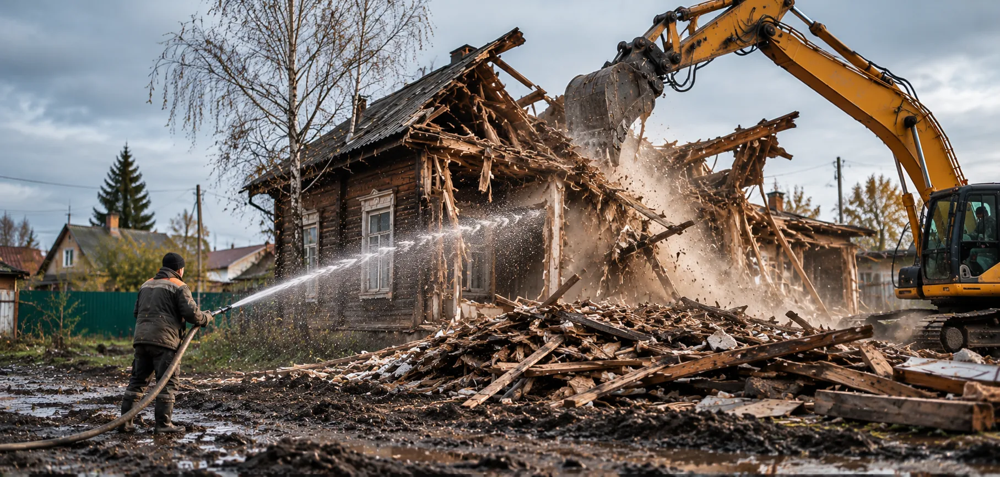

Хозпостройки.
Небольшие сооружения часто стоят близко к забору, саду или коммуникациям — поэтому важна последовательность работ.
Что входит
в оценку?
Освободим участок от небольших построек, не затрагивая конструкции, которые нужно сохранить.
 Сараи и хозяйственные постройки / IMAGE 01
Сараи и хозяйственные постройки / IMAGE 01Каждый объект отличается: конструкция, окружение, объём разбора и условия вывоза.


Иллюстративные изображения. Не являются фотоматериалами подтверждённых заказов DomPogrom.
Порядок
и границы.
Итоговый перечень согласуется с владельцем объекта после уточнения условий.
Фиксация границ демонтажа
Содержание операции и её включение в смету уточняются по объекту.
Ручная или механизированная разборка
Содержание операции и её включение в смету уточняются по объекту.
Сортировка при необходимости
Содержание операции и её включение в смету уточняются по объекту.
Погрузка и вывоз в согласованном объёме
Содержание операции и её включение в смету уточняются по объекту.
Без лишних
обещаний.
Короткие ответы на то, что важно узнать до начала работ.
Можно разобрать только сарай, не затрагивая навес?
Только после оценки узлов примыкания и общей устойчивости смежных конструкций.
Как рассчитывается стоимость?
После оценки площади, материала, сложности, доступа, необходимости вывоза и демонтажа основания. Универсальная фиксированная цена может быть некорректна.